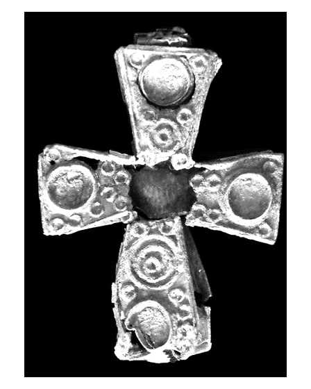
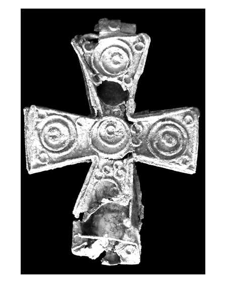

Catalog › CE-0390 · APH2017-9
Encolpion bivalv din aliaj de cupru, cat. 9, Aphrodisias
nedatat · Aphrodisias, Turcia
double-sided reliquary cross (enkolpion), altul; nedatat; found at Aphrodisias, Turcia.




Identificare
- Categorie
- Encolpion bivalv (relicvar)
- Material
- Altul
- Stare
- Întreagă
- Dimensiuni
- Î 80 × L 59 × Gr 11 mm
Iconografie
- Avers
- Ornament geometric
- Descriere avers
- Pe față o compoziție de locașuri goale (collets) în locul cercurilor concentrice; la centru o gaură mare în foaia de aliaj, pe care autorul o vede posibil ca un locaș mai mare și mai adânc, nu ca deteriorare.
- Revers
- Ornament geometric
- Descriere revers
- Aranjamente de cercuri concentrice în fiecare braț și la centru.
- Limba
- Fără inscripție
Datare și atribuire
- Datare
- nedatat
- Centru
- Necunoscut
- Tipologie
- Pitarakis (2006), forma tip I
Descoperire
- Localitate
- Aphrodisias
- Țară
- Turcia
- Context
- Necunoscut
- Coordonate
- 37.7088° N, 28.7238° E
- Precizia locului
- Doar localitatea
Păstrare și referințe
- Nr. inventar
- 07-014
- Bibliografie
- H. Jeffery, The Archaeology of Middle Byzantine Aphrodisias, teză DPhil în arheologie clasică, University of Oxford, aprilie 2019 [Jeffery 2019], vol. 3 (Figures), Descriptive Catalogue Four: Copper Alloy Reliquary Crosses, cat. nr. 9 (paginile nu sunt numerotate în PDF; p. PDF 439), fotografie reprodusă la p. PDF 438.
- Figura
- fotografie în catalog, fără număr de figură
- Planșe
- Jeffery 2019, vol. 3, Cat. Four, p. PDF 438
- Analogii
- Pitarakis (2006), nr. 198–203; cea mai apropiată paralelă: un mormânt din capela funerară a necropolei din sec. XI–XII de la Djadovo (Kantincarov et al. 1989, p. 275, fig. 321).
- Observații
- Cruce completă, din foi subțiri de aliaj de cupru, cu decor din sârmă de aliaj de cupru; multe rupturi în foile delicate, mai ales în jurul îmbinărilor; brațul inferior strivit pe revers, iar pe brațul de sus de pe această față o gaură aproximativ circulară. Brațe cu lărgire pronunțată. Context: găsită lângă un pithos mare, într-un context probabil medieval, într-un sondaj pentru extinderea Galeriei Sebasteion a muzeului. Tip cunoscut din mai multe săpături din Bulgaria și nordul Balcanilor (Pitarakis 2006, p. 247–248). Dimensiuni: L. 8,0 × l. 5,9 × gros. 1,1 cm. Material: „copper alloy” (aliaj de cupru) în sursă. Coordonate: ale localității (aproximative), nu date în sursă.
Citare: Corpus Encolpiorum, CE-0390, Encolpion bivalv din aliaj de cupru, cat. 9, Aphrodisias, --root/piese/APH2017-9/ (accesat 2026-10-17).